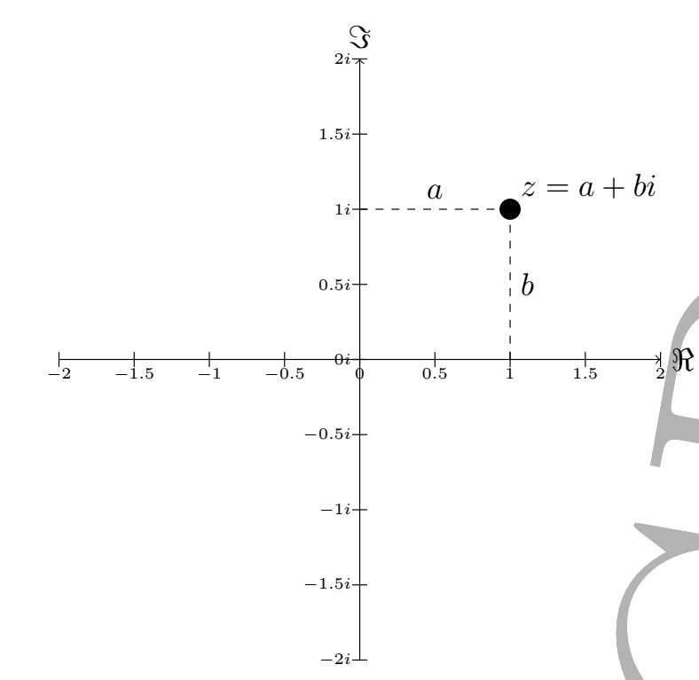
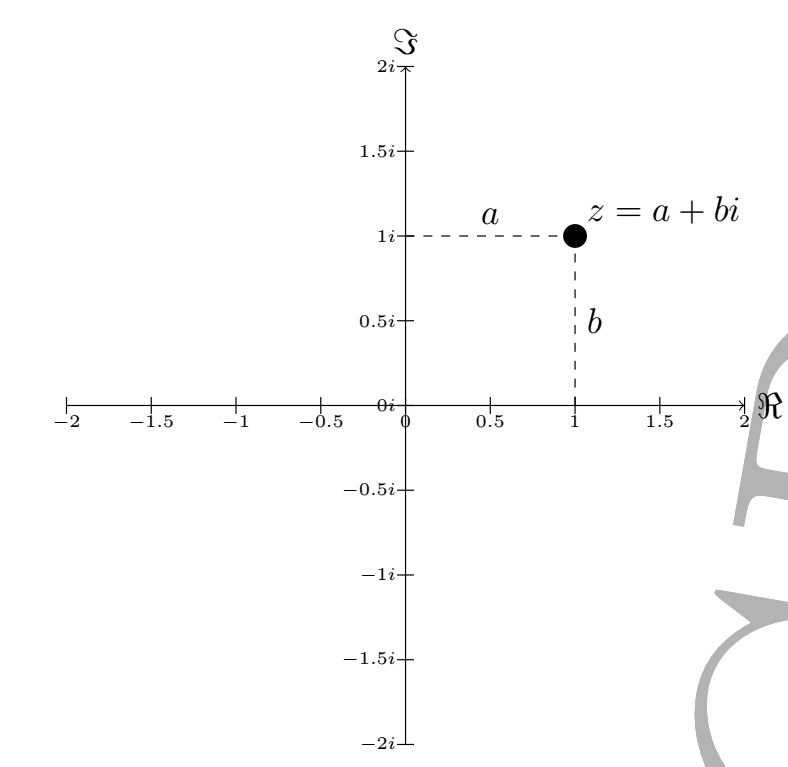
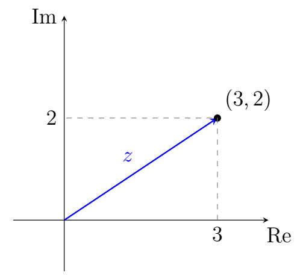
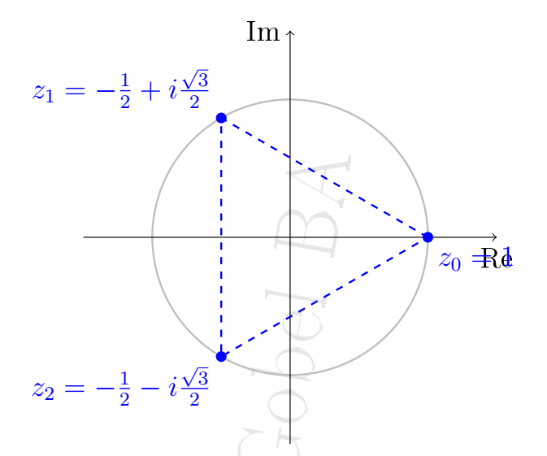
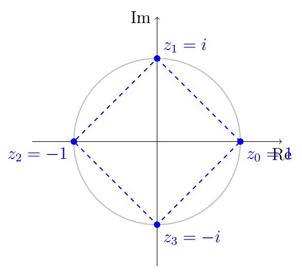

Introduction Aux Nombres Complexes
Les nombres complexes, que nous allons explorer dans ce cours, ont une origine intrigante liée à la résolution des équations polynomiales. Au cours de l'histoire des mathématiques, des énigmes telles que la résolution de l'équation cubique $x^3 + ax^2 + bx + c = 0$ ont captivé l'attention des mathématiciens.
Au XVIe siècle, l'équation cubique a été résolue par le mathématicien italien Niccolò Fontana, également connu sous le nom de Tartaglia. Cependant, il est intéressant de noter que la tentative de résolution de certaines équations cubiques conduisit à l'introduction des nombres complexes.
L'équation $x^2 + 1 = 0$, apparemment insoluble dans l'ensemble des nombres réels, était une pierre d'achoppement dans la résolution des équations cubiques. Pourtant, pour surmonter cette difficulté, les mathématiciens du XVIe siècle, tels que Gerolamo Cardano et Rafael Bombelli, ont introduit une unité imaginaire, notée $i$, qui était la solution de l'équation $i^2 = -1$. Cette innovation a été la première étape vers la création de l'ensemble des nombres complexes.
Ainsi, les nombres complexes ne sont pas seulement une extension abstraite des nombres réels, mais ils ont émergé de la nécessité de résoudre des problèmes concrets en algèbre. Dans ce cours, nous explorerons les propriétés fascinantes et les applications puissantes des nombres complexes.
Préparez-vous à plonger dans le monde fascinant des nombres complexes, où l'imagination des mathématiciens a transcendé les limites des nombres réels pour créer un outil puissant et élégant.
On appelle ensemble des nombres complexes l'ensemble noté $\mathbb{C}$ qui :
- contient l'ensemble des réels \( \mathbb{R} \) : \( \mathbb{R} \subset \mathbb{C} \)
- est muni de l'addition et de la multiplication, possédant les mêmes propriétés que \( \mathbb{R} \) (commutativité, associativité, élément neutre, élément symétrique, distributivité, etc.)
- contient un élément noté \( i \) vérifiant \( i^{2} = -1 \)
Forme Algébrique d'un Nombre Complexe
-
Tout nombre complexe \( z \in \mathbb{C} \) s'écrit, de façon algébrique, sous la forme
\( z = a + ib \), où \( a \) et \( b \) sont des nombres réels.
\( a \) est appelé la partie réelle de \( z \), notée \( \mathcal{R}e(z)=a \), et \( b \) est appelé la partie imaginaire de \( z \), notée \( \mathcal{I}m(z)=b \). - Le nombre complexe \( z=a+ib \) est réel si, et seulement si, \( b=0 \), c'est-à-dire \( \mathcal{I}m(z)=0 \).
- Le nombre complexe \( z=a+ib \) est imaginaire pur si, et seulement si, \( a=0 \), c'est-à-dire \( \mathcal{R}e(z)=0 \).
- Le nombre complexe \( z=a+ib \) est nul si, et seulement si : \( \begin{cases} a=0\\ b=0 \end{cases}\implies\\ \begin{cases} \mathcal{R}e(z)=0\\ \mathcal{I}m(z)=0 \end{cases} \)
- Soient $z$ et $z'$ deux nombres complexes tels que $z=a+ib$ et $z'=a'+ib'$, alors $z=z'$ si, et seulement si, \( \begin{cases} a=a'\\ b=b' \end{cases}\implies\\ \begin{cases} \mathcal{R}e(z)=\mathcal{R}e(z')\\ \mathcal{I}m(z)=\mathcal{I}m(z') \end{cases} \)
Soit le nombre complexe \( z = 3 - 4i \).
- La partie réelle de \( z \) est \( \mathcal{R}e(z) = 3 \).
- La partie imaginaire de \( z \) est \( \mathcal{I}m(z) = -4 \).
- \( z \) n'est pas un réel car \( \mathcal{I}m(z) \neq 0 \).
- \( z \) n'est pas imaginaire pur car \( \mathcal{R}e(z) \neq 0 \).
- Le conjugué de \( z \) est \( \overline{z} = 3 + 4i \).
\( \begin{aligned} (a+ib)^{2} &= a^{2}+2iab-b^{2}, \\ (a-ib)^{2} &= a^{2}-2iab-b^{2}. \end{aligned} \)
Considérons le nombre complexe $z=2+3i$. Appliquons les identités remarquables :
\(
\begin{aligned}
(2+3i)^{2} &= (2)^{2} + 2 \cdot 2 \cdot 3i + (3i)^{2} \\
&= 4 + 12i - 9 \\
&= -5 + 12i.
\end{aligned}
\)
De même, pour $z$, $\overline{z} = 2-3i$, appliquons l'identité remarquable correspondante :
\(
\begin{aligned}
(2-3i)^{2} &= (2)^{2} - 2 \cdot 2 \cdot 3i + (3i)^{2} \\
&= 4 - 12i - 9 \\
&= -5 - 12i.
\end{aligned}
\)
Soit $z = a + ib$ un nombre complexe, où $a$ et $b$ sont des nombres réels, le conjugué de $z$, noté $\overline{z}$, est obtenu en changeant le signe de la partie imaginaire, c'est-à-dire $\overline{z} = a - ib$.
Le conjugué de $w = 3 + 2i$ est $\overline{w}=3-2i$
- Le conjugué du conjugué : $\overline{\overline{z}} = z$.
- La somme des conjugués est égale à la conjugaison d'une somme : $\overline{z_1 + z_2} = \overline{z_1} + \overline{z_2}$.
- Le conjugué du produit est égal au produit des conjugués : $\overline{z_1 \cdot z_2} = \overline{z_1} \cdot \overline{z_2}$.
- Le conjugué d'un quotient est égal au quotient des conjugués : $\overline{\left(\frac{z_1}{z_2}\right)} = \frac{\overline{z_1}}{\overline{z_2}}$, pour $z_2 \neq 0$.
- $p\in\mathbb{Z}$ $\overline{z^{p}} = \overline{z}^{p}$
$z$ est réel si, et seulement si, $ \overline{z} = z $.
$z$ est imaginaire pur si, et seulement si, $\overline{z} = -z$.
$\mathcal{R}e(z)=\frac{z+\overline{z}}{2}$
$\mathcal{I}m(z)=\frac{z-\overline{z}}{2i}$
- Considérons deux nombres complexes $z_1 = 2 + 3i$ et $z_2 = 1 - 2i$. Calculons les conjugués et vérifions les propriétés :
- Le conjugué du conjugué : $\overline{\overline{z_1}} = \overline{\overline{2 + 3i}} = 2 + 3i = z_1$.
- La somme des conjugués : $\overline{z_1 + z_2} = \overline{3 + i} = 3 - i = \overline{z_1} + \overline{z_2}$.
- Le produit des conjugués : $\overline{z_1 \cdot z_2} = \overline{8 + 5i} = 8 - 5i = \overline{z_1} \cdot \overline{z_2}$.
- Le conjugué du produit : $\overline{z_1 \cdot z_2} = \overline{-4 - 7i} = -4 + 7i = \overline{z_1} \cdot \overline{z_2}$.
- Le conjugué d'un rapport : $\overline{(\frac{z_1}{z_2})} = \frac{\overline{2 + 3i}}{\overline{1 - 2i}} = \frac{2 - 3i}{1 + 2i}$.
- Soit \(z = 1 + i\) et \(p = 3\). Vérifions que \(\overline{z^3} = \overline{z}^3 \)
On a : \( z^3 = (1 + i)^3 = -2 + 2i. \)
Donc : \( \overline{z^3} = \overline{-2 + 2i} = -2 - 2i. \)
D'autre part : \( \overline{z} = 1 - i, \quad \overline{z}^3 = (1 - i)^3 = (1 - i)(1 - i)(1 - i) = -2 - 2i. \)
Ainsi, \(\overline{z^3} = \overline{z}^3\).
Les nombres complexes peuvent être vus comme des points du plan appelé.
Chaque nombre complexe est représenté par un point unique dans ce plan, où l'axe horizontal correspond à la partie réelle et l'axe vertical à la partie imaginaire.
Le plan complexe est un plan muni d'un repère cartésien.
Chaque nombre complexe $z = a + ib$ peut être associé à un point $(a, b)$ dans ce plan.
Le nombre complexe $z = a + i b$ est appelé l'affixe du point $M$.
On peut donc noter sans ambiguïté $M(z)$ le point $M$ d'affixe $z$.
$z$ est l'affixe de $M$
$M$ est l'image de $z$
On note $M(z)$
 

Soit $z = a + ib$ un nombre complexe. Le point associé dans le plan complexe est $(a, b)$.
Considérons le nombre complexe $z = 3 + 4i$.
Le point associé dans le plan complexe est $(3, 4)$.
Représenter $z$ et $\overline{z}$
Le module d'un nombre complexe possède plusieurs propriétés importantes :
- Le module d'un conjugué : $|\overline{z}| = |z|$.
- Le module d'un produit : $|z_1 \cdot z_2| = |z_1| \cdot |z_2|$.
- Le module d'une puissance : $|z^n| = |z|^n$.
- Le module d'un conjugué : $z\overline{z} = |z|=\sqrt{a^2 + b^2}$.
- Inégalité triangulaire : Pour tous \(z_1, z_2 \in \mathbb{C}\),\(|z_1 + z_2| \leq |z_1| + |z_2|\)
- Pour deux points \(A\) et \(B\) d'affixes respectives \(z_A\) et \(z_B\), la distance \(AB\) entre ces points est donnée par : $|z_A - z_B| =AB$.
Soit $z = 3 + 4i$. Calculer son module $|z|$.puis $|z^{5}|$.
\( |z| = \sqrt{3^2 + 4^2} = \sqrt{9 + 16} = \sqrt{25} = 5 \)
Le module de $z$ est donc $5$.
\( |z^{5}| =|z|^{5}=(\sqrt{3^2 + 4^2})^{5} = (\sqrt{9 + 16})^{5} = (\sqrt{25})^{5} = (\sqrt{5})^{4+1} = 25\sqrt{5} \)
1.a 1.b 1.c 1.d (CIAM SE PAGE 2010)
1.e 1.f 1.g (CIAM SE PAGE 2012)
\(z_{1}=-\sqrt{3}+i\) ; \(z_{2}=2(-\sqrt{3}+i)\) ; \(z_{3}=(-\sqrt{3}+i)(1+i)^{2}\)
\(z_{4}=\frac{(-\sqrt{3}+i)^{3}}{(1+i)^{2}}\) ; \(z_{4}=\frac{(1+i)^{3}}{3+2i}\)
- Calcule le module de ces nombres complexe Le plan est muni d'un repère orthonormal \((O,\vec{u},\vec{v})\).
- Calculer: \(AB\) ; \(AC\) ; \(BC\).
Soit A, B et C les affixes respectives \(1-3i\) ; \(4+5i\) ; \(-3+2i\).
Soit z un nombre complexe non nul sur le repère othonormal $(O,\vec{u},\vec{v})$
L'argument du nombre complexe $z = a + ib$ non nul est l'angle en radian que le vecteur correspondant à $z$ forme avec l'axe des abscisses dans le plan complexe.
On note généralement $arg(z)=mes(\widehat{\vec{u},\vec{OM}})$
En notant $\theta$ on a : $\cos(\theta)=\frac{\mathcal{R}e(z)}{|z|}$ et $\sin(\theta)=\frac{\mathcal{I}m(z)}{|z|}$
Rappel
Tableau trigonométrique
Cercles trigonométrie
Soit z et z' deux nombrs complexes ,et $n\in \mathbb{N}$
- \( \arg(z_1 \cdot z_2) = \arg(z_1) + \arg(z_2)[2\pi] \)
- \( \arg(\frac{z_1}{z_2}) = \arg(z_1) - \arg(z_2)[2\pi] \)
- \( \arg(\frac{1}{z_2}) = - \arg(z_2)[2\pi] \)
- \( \arg((z_2)^{n}) = n\arg(z_2)[2\pi] \)
- \( \arg(-z_2) = \arg(z_2)+\pi[2\pi] \)
- \( \arg(\overline{z}) = -\arg(z)[2\pi] \)
- soit $z_A$ ; $z_B$ ; $z_C$ les affixes respectives des points A, B et C les image de ces complexes dans le repère orthonormal $(O,\vec{u},\vec{v})$ tel que $z_A \neq z_B$ ; $z_C \neq z_A$ $\arg(z_A-z_B)=(\vec{u},\overrightarrow{AB})$
- $\arg(\frac{z_C-z_A}{z_B-z_A})=(\widehat{\overrightarrow{AB},\overrightarrow{AC}})$
Déterminer l'argument des nombres complexes suivnats
$z_{1}=-\sqrt{3}+i$ ; $z_{2}=2(-\sqrt{3}+i)$ ; $z_{3}=(-\sqrt{3}+i)(1+i)^{2}$
$z_{4}=\frac{(-\sqrt{3}+i)^{3}}{(1+i)^{2}}$ ; $z_{4}=\frac{(1+i)^{3}}{3+2i}$
Si $b>0$ alors $arg(z)=\frac{\pi}{2}$
Si $b< 0 $ alors $\arg(z)=\frac{-\pi}{2}$
Soit z un nombre complexe non nul d'argument $\theta$. On appelle forme trigonométrique d'un nombre complexe l'écriture suivante:
$z=|z|(cos(\theta)+isin(\theta)) \text{ Avec } \begin{cases}cos(\theta)=\frac{Re(z)}{|z|}\\sin(\theta)=\frac{Im(z)}{|z|}\end{cases}$
On pose $cos(\theta)+isin(\theta)=e^{i\theta}$
Soit z un nombre complexe non nul d'argument $\theta$ i.e $\arg(z)=\theta$.
On appelle forme exponentielle d'un nombre complexe l'écriture : $z=|z|e^{i\theta}$
Soit $z_{1}=e^{i\theta_{1}}$ et $z_{2}=e^{i\theta_{1}}$ on a:
$z=e^{i\theta_{1}} \times e^{i\theta_{2}} = e^{i(\theta_{1}+\theta_{2})}$
$z=\frac{e^{i\theta_{1}}}{e^{i\theta_{2}}} = e^{i(\theta_{1}-\theta_{2})}$
$z=\frac{1}{e^{i\theta}} = e^{-i\theta}$
$z^{n}=(e^{i\theta_{1}})^{n}=e^{in\theta_{1}}$
Donne la forme exponentielle des nombres complexes suivants:
$z_{1}=-\sqrt{3}+i$ ; $z_{2}=-\sqrt{6}+i\sqrt{2}$ et $z_{3}=1+i\sqrt{3}$
A partir de la forme trigonométrique d'un nombre complexe on peut déduire la formule de Moivre.
$\forall \theta \in \mathbb{R}$ et $n \in \mathbb{Z}$,
$(cos(\theta)+isin(\theta))^{n}=cos(n\theta)+isin(n\theta)$
$(cos(\theta)-isin(\theta))^{n}=cos(n\theta)-isin(n\theta)$
A partir de la forme exponentielle d'un nombre complexe on peut déduire les formules d'Euler.
$cos(\theta)\frac{e^{i\theta}+e^{-i\theta}}{2}$
$sin(\theta)\frac{e^{i\theta}-e^{-i\theta}}{2i}$
$cos(n\theta)=\frac{e^{ni\theta}+e^{-ni\theta}}{2}$
$sin(n\theta)=\frac{e^{ni\theta}-e^{-ni\theta}}{2i}$
Linéariser $sin^{3}(x)$ et $cos^{3}(x)$
$cos^{3}(x)=\frac{1}{4}cos(3x)+\frac{3}{4}cos(x)$
$sin^{3}(x)=\frac{-1}{4}sin(3x)+\frac{3}{4}sin(x)$
Les racines n-ièmes de l'unité sont les solutions complexes de l'équation suivante :\(z^n = 1,\) où \(n \in \mathbb{N}^*\) est un entier naturel non nul.
Elles sont appelées ainsi car leur module est toujours égal à \(1\), ce qui signifie qu'elles appartiennent au cercle unité dans le plan complexe.
Formule générale : Les \(n\) racines n-ièmes de l'unité sont données par :
\(
z_k = e^{i\frac{2k\pi}{n}} = \cos\left(\frac{2k\pi}{n}\right) + i\sin\left(\frac{2k\pi}{n}\right),
\text{ où } k \in \{0, 1, 2, \ldots, n-1\}
\)
Interprétation :Chaque \(z_k\) est une rotation par un angle \(\frac{2k\pi}{n}\) autour de l'origine, dans le sens trigonométrique (sens anti-horaire).
Calcul des racines :
- Pour \(k = 0\) : \[ z_0 = e^{i\frac{2\cdot 0\pi}{3}} = e^{i0} = 1. \]
- pour \(k = 1\) : \[z_1 = e^{i\frac{2\cdot 1\pi}{3}} = e^{i\frac{2\pi}{3}} = \cos\left(\frac{2\pi}{3}\right) + i\sin\left(\frac{2\pi}{3}\right) = -\frac{1}{2} + i\frac{\sqrt{3}}{2}.\]
- Pour \(k = 2\) : \[ z_2 = e^{i\frac{2\cdot 2\pi}{3}} = e^{i\frac{4\pi}{3}} = \cos\left(\frac{4\pi}{3}\right) + i\sin\left(\frac{4\pi}{3}\right) = -\frac{1}{2} - i\frac{\sqrt{3}}{2}. \]
Résultat : Les \(3\) racines cubiques de l'unité sont : \[ z_0 = 1, \quad z_1 = -\frac{1}{2} + i\frac{\sqrt{3}}{2}, \quad z_2 = -\frac{1}{2} - i\frac{\sqrt{3}}{2}. \]
Représentation graphique dans le plan complexe :
Les racines cubiques de l'unité forment les sommets d'un triangle équilatéral inscrit dans le cercle unité dans le plan complexe.
Calcul des racines :
- Pour \(k = 0\) : \( z_0 = e^{i\frac{2\cdot 0\pi}{4}} = e^{i0} = 1. \)
- Pour \(k = 1\) : \( z_1 = e^{i\frac{2\cdot 1\pi}{4}} = e^{i\frac{\pi}{2}} = \cos\left(\frac{\pi}{2}\right) + i\sin\left(\frac{\pi}{2}\right) = i. \)
- Pour \(k = 2\) : \( z_2 = e^{i\frac{2\cdot 2\pi}{4}} = e^{i\pi} = \cos(\pi) + i\sin(\pi) = -1. \)
- Pour \(k = 3\) : \( z_3 = e^{i\frac{2\cdot 3\pi}{4}} = e^{i\frac{3\pi}{2}} = \cos\left(\frac{3\pi}{2}\right) + i\sin\left(\frac{3\pi}{2}\right) = -i. \)
Résultat :Les \(4\) racines quatrièmes de l'unité sont : \[ z_0 = 1, \quad z_1 = i, \quad z_2 = -1, \quad z_3 = -i. \]
Représentation graphique dans le plan complexe :
Les racines quatrièmes de l'unité forment les sommets d'un carré inscrit dans le cercle unité dans le plan complexe.
Soit $U \in \mathbb{C}$ et n un entier naturel différent de zéro.
L'équation $z^{n}=U$, $\theta=arg(z)$, a n solutions de la forme.
$z_{k}=\sqrt[n]{|U|}e^{i(\frac{\theta+2k\pi}{n})}$ avec $ 0\leq k \leq n-1 $.
Soit $z_{k}=\sqrt[n]{|U|}e^{i(\frac{\theta+2k\pi)}{n}}$
Les racines $z_{0}$ ; $z_{1}$ ; $z_{2}$ ; $z_{3}$ ; $z_{4}$ ; $z_{5}$ ; ... ; $z_{k-1}$ sont représentées dans le plan complexe par les points $M_{0}$ ; $M_{1}$ ; $M_{2}$ ; $M_{3}$ ; $M_{4}$ ; $M_{5}$ ; ... ; $M_{k-1}$ qui sont les sommets d'un polygone régulier inscrit dans le cercle de rayon $\sqrt[n]{|U|}$.Étape 1 : Établir le système d'équations
Le nombre complexe \( z = 3 + 4i \) est écrit sous la forme \( z = a + bi \), avec \( a = 3 \) et \( b = 4 \). Le système à résoudre est : \[ \begin{cases} x^2 - y^2 = a, \\ 2xy = b, \\ x^2 + y^2 = \sqrt{a^2 + b^2}. \end{cases} \] Calculons \( \sqrt{a^2 + b^2} \) : \[ \sqrt{a^2 + b^2} = \sqrt{3^2 + 4^2} = \sqrt{9 + 16} = \sqrt{25} = 5. \] Ainsi, le système devient : \[ \begin{cases} x^2 - y^2 = 3, \\ 2xy = 4, \\ x^2 + y^2 = 5. \end{cases}\implies \begin{cases} x^2 - y^2 = 3, \\ x^2 + y^2 = 5,\\ 2xy = 4. \end{cases}\implies \begin{cases} x^2 = 4, \\ y^2 = 1,\\ 2xy = 4. \end{cases}\implies \begin{cases} x = 2 \textbf{ ou } x = -2, \\ y = 1 \textbf{ ou } y = -1,\\ 2xy = 4. \end{cases} \]
Étape 2 : Résoudre le système
De \( x^2 + y^2 = 5 \) et \( x^2 - y^2 = 3 \), additionnons les deux équations : \[ 2x^2 = 8 \implies x^2 = 4 \implies x = \pm 2. \] Si \( x = 2 \), utilisons \( 2xy = 4 \) pour trouver \( y \) : \[ 2(2)y = 4 \implies y = 1. \] Si \( x = -2 \), alors \( 2(-2)y = 4 \) donne : \[ y = -1. \]Étape 3 : Les solutions
Les deux solutions sont : \[ w_1 = x + yi = 2 + i, \quad w_2 = -x - yi = -2 - i. \]Résultat final :
Les racines carrées de \( z = 3 + 4i \) sont : \[ w_1 = 2 + i \quad \text{et} \quad w_2 = -2 - i. \]Résoudre dans \( \mathbb{C} \) l'équation \( z^2 - (1 + i)z + i = 0 \).
1.Trouver \( \sqrt{\Delta} \) en utilisant la méthode \( z = w^2 \) :
On cherche \( \sqrt{\Delta} \), où \( \Delta = -2i \), en résolvant \( w^2 = -2i \). Posons \( w = x + yi \), avec \( x, y \in \mathbb{R} \). Alors : \[ (x + yi)^2 = x^2 - y^2 + 2xyi = -2i. \] Cela donne le système suivant : \[ \begin{cases} x^2 - y^2 = 0, \\ 2xy = -2. \end{cases} \]Résolution :
- De \( x^2 - y^2 = 0 \), on a \( x^2 = y^2 \), donc \( y = \pm x \).
- Substituons \( y = x \) dans \( 2xy = -2 \) : \[ 2x(x) = -2 \implies 2x^2 = -2 \implies x^2 = 1 \implies x = \pm 1. \] Si \( x = 1 \), alors \( y = 1 \). Si \( x = -1 \), alors \( y = -1 \).
Les solutions pour \( w \) sont :
\[ w_1 = 1 - i \quad \text{et} \quad w_2 = -1 + i. \] Ainsi, \( \sqrt{\Delta} = 1 - i \) ou \( \sqrt{\Delta} = -1 + i \).2.Appliquer la formule des solutions :
Les solutions de l'équation quadratique sont données par : \[ z = \frac{-b \pm \sqrt{\Delta}}{2a}. \]- Pour \( \sqrt{\Delta} = 1 - i \) : \[ z_1 = \frac{-(-1 - i) + (1 - i)}{2} = \frac{1 + i + 1 - i}{2} = \frac{2}{2} = 1. \]
- Pour \( \sqrt{\Delta} = -1 + i \) : \[ z_2 = \frac{-(-1 - i) - (-1 + i)}{2} = \frac{1 + i - (-1 + i)}{2} = \frac{1 + i + 1 - i}{2} = \frac{2i}{2} = i. \]
Résultat final :
Les solutions de \( z^2 - (1 + i)z + i = 0 \) sont : \[ z_1 = 1 \quad \text{et} \quad z_2 = i. \]- Montrer que $(E)$ admet une solution réelle à déterminer.
- Résoudre $(E)$.
- Soit $z = a$ la solution réelle de $(E)$. Donc, \[ a^3 - 3a^2 + (3 - i)a - 2(1 - i) = 0 \] \[ \implies a^3 - 3a^2 + 3a - ai - 2 + 2i = 0 \] \[ \implies a^3 - 3a^2 + 3a - 2 + i(2 - a) = 0. \] Cela implique : \[ \begin{cases} a^3 - 3a^2 + 3a - 2 = 0 \\ 2 - a = 0 \end{cases} \] \[ \implies \begin{cases} a^3 - 3a^2 + 3a - 2 = 0 \quad (1) \\ a = 2 \quad (2) \end{cases} \] $a = 2$ vérifie aussi l'équation $(1)$, donc $2$ est la solution réelle cherchée.
- L’équation $(E)$ devient $(z - 2)(az^2 + bz + c) = 0$. En procédant par exemple par la méthode de Hörner, on détermine les coefficients $a$, $b$ et $c$. On a : \[ (z - 2)(z^2 - z + 1 - i) = 0 \iff z = 2 \quad \text{ou} \quad z^2 - z + 1 - i = 0. \] Soit l'équation $z^2 - z + 1 - i = 0$, alors : \[ \Delta = (1)^2 - 4(1)(1 - i) = 1 - 4 + 4i = -3 + 4i = (1 + 2i)^2. \] Donc : \[ z_1 = \frac{1 - 1 - 2i}{2} = -i \quad \text{et} \quad z_2 = \frac{1 + 1 + 2i}{2} = 1 + i. \] D'où : \[ S_C = \{2; -i; 1 + i\}. \] \[ \begin{array}{|c|c|c|c|c|} \hline & 1 & 1 & 1 & 1 \\ \hline -1 & \times & -1 & 0 & -1 \\ \hline & 1 & 0 & 1 & 0 \\ \hline \end{array} \]